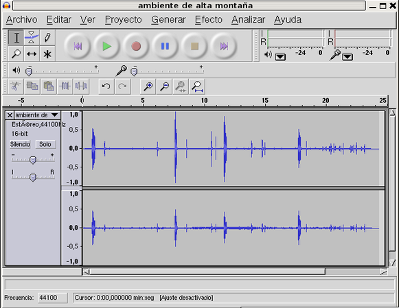
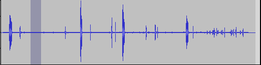
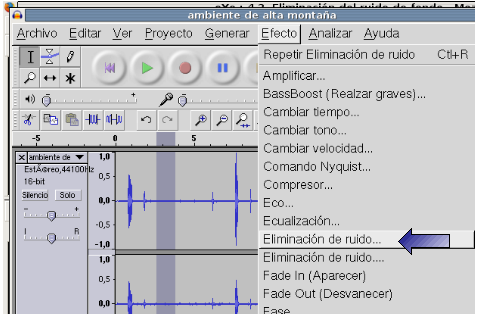
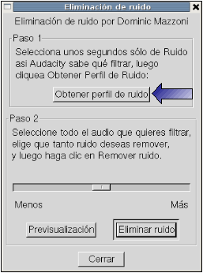
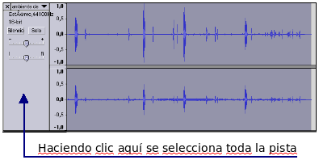

2.4.4. Eliminación del ruido de fondo
Con esta práctica y las siguientes se explican diferentes opciones que tiene el Audacity para editar y trabajar con el sonido digital a través de ejemplos prácticos.
En esta práctica en concreto se quiere eliminar el ruido de fondo de una grabación.
Temporalización: 30 minutos
Archivos necesarios: (hacer clic con el botón derecho del ratón sobre el enlace y guarda el enlace en el disco para poder trabajar con el archivo)
Del archivo sonoro de un ambiente de montaña (ambiente de alta montaña.ogg)
en el que el ruido de fondo no deja oir con claridad los otros, lo vamos a "limpiar" y el resultado final será:
Actividad paso a paso:
1. Iniciar el programa Audacity (Aplicaciones / sonido y video / Audacity)
2. Des de el menú Proyecto / Importar audio, seleccionar el archivo ambiente de alta montaña.ogg

3. Seleccionar el perfil del ruido a eliminar:
Con la herramienta de selección activada selecciona una parte de la pista donde aparece sólo el ruido.
4. Con el perfil selecionado abrir el menú Efecto / Eliminación de ruido (el primero de los dos que hay) y hacer clic sobre Obtener perfil de ruido.
5. Seleccionar ahora toda la pista y abrir de nuevo el menú Efecto / Eliminación de ruido (la misma opción)

6. Hacer clic sobre el botón Previsualización (1); si el resultado no es del todo correcto puedes probar modificando el nivel de extracción de sonido moviendo el selector (2) hacia Más o Menos. Cuando sea correcto hacer clic sobre el botón Eliminar ruido(3), el resultado será una pista con una linea plana en los lugares que detecta y elimina el perfil del ruido.
7. Sólo queda guardar el proyecto con la opción correspondiente en Archivo / Guardar proyecto. Recuerda que Audacity utiliza un formato expecial (extensión aup), si quieres que el archivo generado sea legible por los otros dispositivos se tendrá que exportar a formato OGG, MP3(pedirá información sobre autor, album, etc.) o WAV desde el menú Archivo / Exportar como ... (el archivo creado tendrá las características de frecuencia, formato y canales dadas en la práctica 4.2).
Este artículo está licenciado bajo Creative Commons Attribution-NonCommercial 2.5 License
Formació del Professorat - CEFIRE